Conteúdo para Instagram
Pesquisa, texto, arte e legenda num mesmo pipeline.

Linguagem natural, memória e ferramentas conectadas à operação.
Hermes Agent · Nous Research e comunidade
Escola online de programação
e Inteligência Artificial.

Conteúdo novo todos os dias.
A IA trabalha dentro do projeto.
Procedimentos reutilizáveis e integrações.
Contexto e execução entre tarefas e canais.
“Crie uma apresentação, publique no site e adicione os downloads.”
Pesquisa, texto, arte e legenda num mesmo pipeline.
Dados e filtros organizados para uma pergunta da operação.
Apresentações, guias e arquivos disponíveis para a equipe.

Um papel definido, contexto próprio e acesso restrito.
Mensagens pertinentes ajudam a compreender a demanda.
Uma campanha precisa de criativos.
O agente prepara uma proposta para a equipe revisar.
Interfaces ilustrativas. A coleta e a iniciativa dependem das permissões daquele fluxo.
PRD, contexto e skills.
delegate_task
Subtarefas independentes, em paralelo

Filho Hermes → Claude Code pela CLI

Filho Hermes → Codex CLI
Filho Hermes → OpenCode pela CLI
Diff, testes e critérios da sprint.
delegate_task cria filhos Hermes. As CLIs externas são chamadas pelo terminal, com ambientes e acessos preparados.

GitHub → registry
Traefik e TLS
 PostgreSQL
PostgreSQL Redis
RedisCelery Worker + Beat para tarefas.

Docker Swarm · VPSMétricas por scrape
Logs enviados pelo coletor
Painéis e consultas
Base dos encontros Elite #03 e #04. cAdvisor/node-exporter complementam métricas. Alloy é a recomendação atual para coleta de logs.
Privado ou equipeCenários ilustrativos. Consultas usam janelas e dados atualizados; acesso por MCP não cria o disparador.
Impacto, contexto e duplicidade.
Reprodução ou critérios de aceite.
Branch isolada, review e correções.
Diff, testes, riscos e proposta.
A mudança chega como uma revisão de código.Exemplo de integração com MentorIA. Um evento do sistema ou uma coleta autorizada fornece a entrada.
PR de exemploPrivado de FelipeDemonstração local, sem enviar mensagens ou alterar repositórios. Mudança na PR exige nova revisão.
Workflow, arquitetura, referências e um laboratório local para explorar o fluxo.
Acessar materiais no GitHubgithub.com/pycodebr/
pycodebr_python_brasil_2026
Hermes Agent · Nous Research e comunidade
Felipe Azambuja · PycodeBR